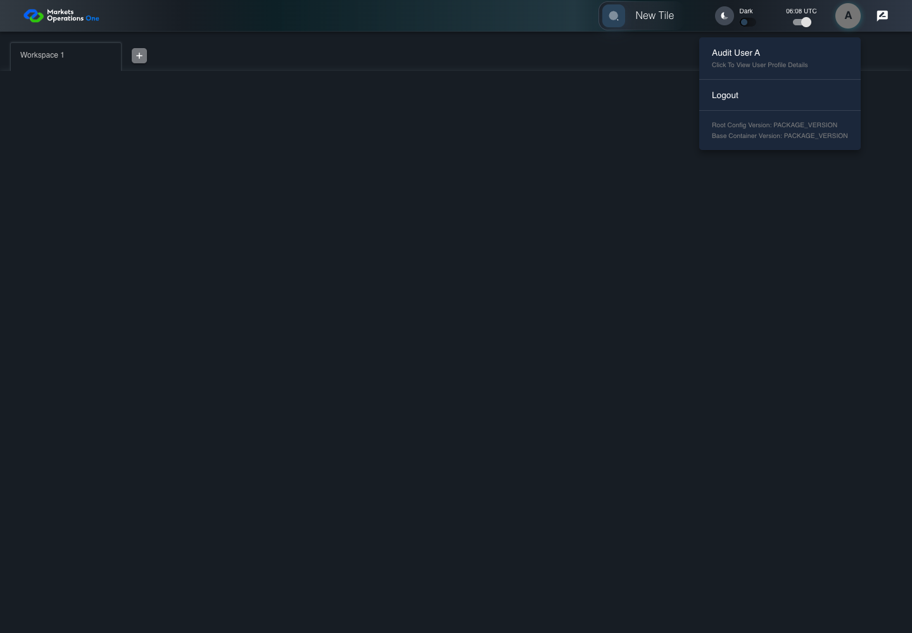

UI-PREF-008 separate functional and data entitlement profiles
PASS · application/run-050/ui-pref-008-separate-functional-and-data-entitlement-profiles-da52b93e85de-attempt-1 · ACTUAL_APPLICATION_LOCAL_SERVICES
Actual current React shell. Controlled login, validation, and activity renewal responses supply UI-USER-01, catalog, and entities. A controlled SystemJS React container displays routes and parameters. Local fixture SVGs replace catalog images. Identity, entitlements, and business tenant behavior are not established.
2026-10-22T06:08:22.606Z to 2026-10-22T06:08:27.091Z
Assertions and result · Artifact manifest · Exact run inputs and source hashes
Result SHA-256:3de685f25a8d4678f975e095baa34de406ab44b59f24370cf982b526766969f7Screenshot capture: CAPTURED. Named frames: 6.
Step screenshot bindings: COMPLETE. 5/5 canonical steps have execution screenshots.
Bindings measure structural coverage only. They do not establish screenshot content quality or relevance.
Screenshot content review: NOT_REVIEWED. Recorded context: 0/6 frames. Identical image bytes: 2 repeated frames. Recorded context does not establish human visual review.
Canonical step timeline
Given User A is authenticated as fixture UI-USER-01 with the case-specific permissions
Execution: PASSED.
1. step-01 Visible state after step 1: Given User A is authenticated as fixture UI-USER-01 with the case-specific permissions
2026-10-22T06:08:24.766Z · 1440×1000
Step: /Users/lushevol/code/github/ratan-release-impact/workbench/tasks/ui-test-coverage-20261022/test-cases.md:7595
SHA-256:fcdb7e886745751817c5a9e551fd47a62899d6497092ca8f80a5c9e3d9e7d6d1And entities contain FMO PORTAL ADMIN and no RATAN_DATA_ENTITLEMENT
Execution: PASSED.
2. step-02 Visible state after step 2: And entities contain FMO PORTAL ADMIN and no RATAN_DATA_ENTITLEMENT
2026-10-22T06:08:24.845Z · 1440×1000
Step: /Users/lushevol/code/github/ratan-release-impact/workbench/tasks/ui-test-coverage-20261022/test-cases.md:7596
SHA-256:fcdb7e886745751817c5a9e551fd47a62899d6497092ca8f80a5c9e3d9e7d6d1Image bytes match frame 1. An unchanged image can be valid for consecutive assertions. This match does not establish correct step content.
When User A clicks icon button named "User Profiles" inside the shell application bar
Execution: PASSED.
3. step-03 Visible state after step 3: When User A clicks icon button named "User Profiles" inside the shell application bar
2026-10-22T06:08:25.038Z · 1440×1000
Step: /Users/lushevol/code/github/ratan-release-impact/workbench/tasks/ui-test-coverage-20261022/test-cases.md:7597
SHA-256:039ca6fa3560bbaf63829661d57b64623617332d7b43255924d6ffb17bf85b52And User A clicks menu item with text "Click to view user profile details" inside the user menu with ID "menu-appbar-avatar"
Execution: PASSED.4. step-04 Visible state after step 4: And User A clicks menu item with text "Click to view user profile details" inside the user menu with ID "menu-appbar-avatar"
2026-10-22T06:08:25.253Z · 1440×1000
Step: /Users/lushevol/code/github/ratan-release-impact/workbench/tasks/ui-test-coverage-20261022/test-cases.md:7598
SHA-256:78758a8255153f47e4c10506dbd9143dca423ee27e709f4a686453ef3b44d869Then text with text "Entitlement User Profile" inside the dialog named "User Profile" is absent after the declared profile population completes
Execution: PASSED.5. step-05 Visible state after step 5: Then text with text "Entitlement User Profile" inside the dialog named "User Profile" is absent after the declared profile population completes
2026-10-22T06:08:26.130Z · 1440×1000
Step: /Users/lushevol/code/github/ratan-release-impact/workbench/tasks/ui-test-coverage-20261022/test-cases.md:7599
SHA-256:ac0f0aa04d6ff01305beb6e733432533f88dbc8ad1d6495f0b8c29eb616585ee
Additional named frames

The final visible state after the named test assertions.
2026-10-22T06:08:26.278Z · 1440×1000Step: Test source: /Users/lushevol/code/github/ratan-release-impact/workbench/e2e/audit-specs/catalog-profile-expanded.spec.ts:266
SHA-256:
ac0f0aa04d6ff01305beb6e733432533f88dbc8ad1d6495f0b8c29eb616585eeImage bytes match frame 5. An unchanged image can be valid for consecutive assertions. This match does not establish correct step content.
Screenshots establish visible state only. Assertions and traces support functional claims.